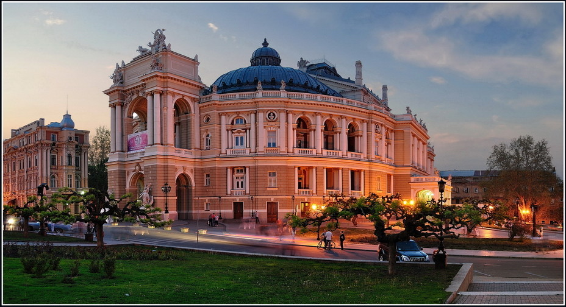

Одеса — місто обласного підпорядкування на чорноморському узбережжі України; адміністративний центр Одеської області; культурний, освітньо-науковий, туристичний та торговий осередок країни; найбільший морський торговий порт країни; великий автомобільний та залізничний вузол. За чисельністю населення Одеса є третім у країні містом після столиці держави, Києва, та мегаполісу Харкова (станом на 1 січня 2018 року в Одесі проживало 1 011 494 осіб). В Одесі діють: машинобудівна, хімічна, нафтопереробна, харчова та легка промисловості. Також налічується 37 закладів вищої освіти, шість театрів, вісім кінотеатрів, філармонія, цирк, музеї, галереї тощо.
Перші поселення на території сучасного міста були засновані близько VII століття до н. е. — III століття н. е. давньогрецькими мореплавцями. Згодом цю місцевість заселила Ногайська орда, яка через якийсь час влилася до Золотої орди. Приблизно у 1324 році узбережжя захопило Велике князівство Литовське. Саме у той час було засновано фортецю та селище Коцюбіїв, що згодом було перейменоване на Хаджибей. 14 (25) вересня 1789 року його було завойовано козацько-російськими військами під командуванням Хосе де Рібаса. Саме після захоплення фортеці поселення було перейменоване на Одесу й отримало статус міста. З 1819 року по 1859 рік у місті діяв торговий режим «порто-франко», що сприяв його стрімкому економічному розвитку. Після захоплення більшовиками Української Народної Республіки Одеса перейшла під вплив комуністичної влади. Під час Другої світової війни Одеса була окупована німецько-румунськими військами.
Історичний центр Одеси з 2009 року перебуває в попередньому спискові об'єктів Світової спадщини ЮНЕСКО. У центральній частині міста — ансамбль будівель кінця XVIII — XIX століть у стилях класицизму, ампіру, модерну тощо. Здебільшого культурні, архітектурні та історичні пам'ятки міста розташовані у межах вулиць Приморської, Преображенської, Буніна та Польської. У межах Одеси та її околицях знаходяться кліматичні та бальнеологічні курорти. Також під містом знаходиться велика мережа підземних ходів і лабіринтів, які утворюють одну з найбільших у світі катакомб із довжиною тунелів приблизно 2,5 тисячі кілометрів